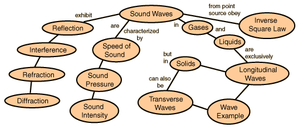

Sound PropagationSound propagates through air as a longitudinal wave. The speed of sound is determined by the properties of the air, and not by the frequency or amplitude of the sound. Sound waves, as well as most other types of waves, can be described in terms of the following basic wave phenomena.  |
Index |
| HyperPhysics*****Sound and Hearing | Go Back |